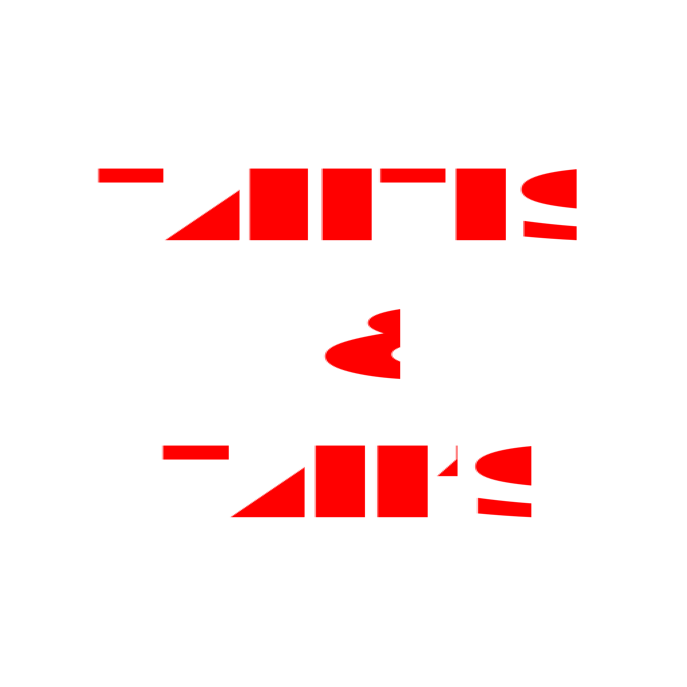
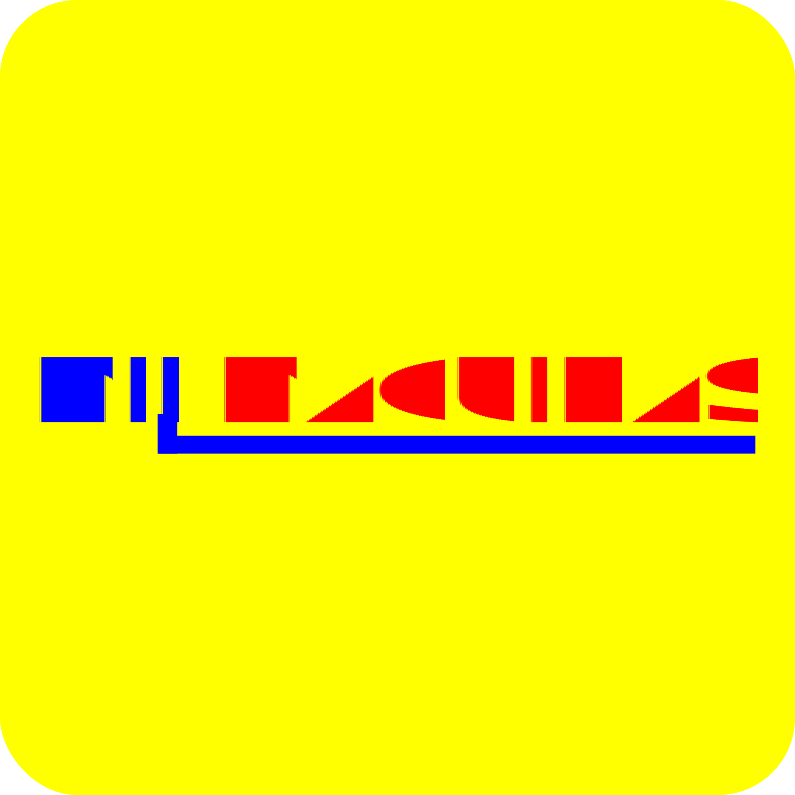

<!DOCTYPE html>
<html lang="en">
<head>
    <meta charset="UTF-8">
    <meta name="viewport" content="width=device-width, initial-scale=1.0">
    <title>Document</title>
</head>


<body>
    
</body>
</html>
<section class="container-experincia">
    <h2 class="primary-heading heading-experience">Experiência</h2>
    <div class="experiences">

        <div class="experience-item">
            <div class="experience-title-container">
                <div> </div>
                <div class="experience-title">Técnico em eletrônica - Samsung</div>
                <div class="date">Nov 2024 - Presente</div>
            </div>
            <p>Especializado no diagnóstico, manutenção e reparo de dispositivos eletrônicos da marca Samsung,
                incluindo smartphones, tablets, TVs e eletrodomésticos. Experiência em análise de circuitos,
                substituição de componentes e garantia de alta performance dos equipamentos.</p>
        </div>

        <div class="experience-item">
            <div class="experience-title-container">
                <div> </div>
                <div class="experience-title">Design Gráfico - Tapetes e tall's</div>
                <div class="date">Mai 2021 - Ago 2022</div>
            </div>
            <p>Atuei na criação de artes personalizadas para estampas de tapetes e outros materiais, utilizando
                CorelDRAW e Photoshop. Desenvolvi layouts criativos, ajustando designs às necessidades dos clientes
                e garantindo qualidade visual e originalidade nos projetos.</p>
        </div>

        <div class="experience-item">
            <div class="experience-title-container">
                <div> </div>
                <div class="experience-title">Auxiliar técnico em eletrônica - Mil Máquinas</div>
                <div class="date">Jan 2020 - Abr 2021</div>
            </div>
            <p>Responsável pela manutenção e reparo de balanças eletrônicas, incluindo diagnóstico de falhas,
                calibração e substituição de componentes, garantindo precisão e funcionamento adequado dos
                equipamentos.</p>
        </div>

    </div>
</section>